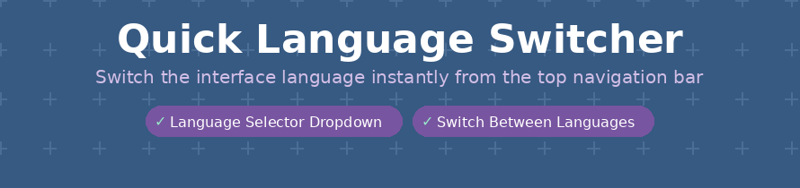
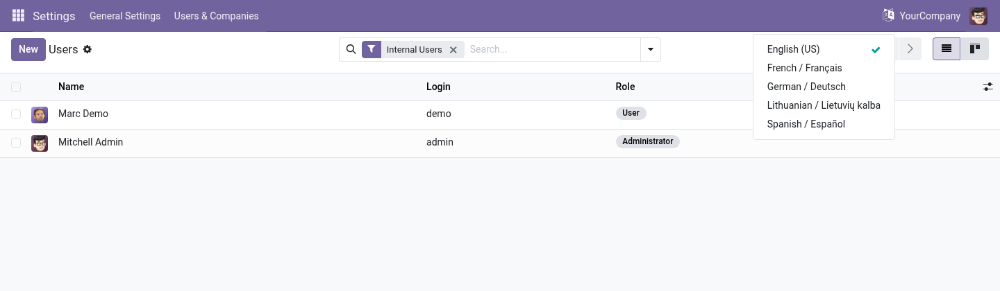

Switch the interface language from the top bar in one click, instead of opening your preferences every time.
Odoo 19.0 Community & Enterprise Free · LGPL-3

The language menu in the top bar lists every active language; the current one is ticked.
A language icon next to your avatar, on every screen.
Pick a language and the page reloads in it right away.
The menu shows the languages active in your database, nothing to maintain.
No settings and no new data: install it and the icon is there.
Free and open source (LGPL-3) by Paulius Gaizauskas · Questions or bugs: GitHub issues